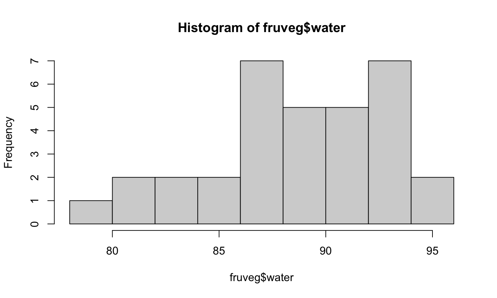

- Créer un projet dans ce dossier :
- Bien réfléchir au nom de ce projet
- Bien réfléchir à l’endroit où ce projet sera situé
- Créer un script
- Savoir où sont les données, et sous quel format
- Savoir ce que l’on veut faire !
Mercredi
Bien se préparer à coder
C’est parti pour les commandes de base !
Le(s) prompt(s)
>: R attend une commande à exécuter+: la commande qui a été entrée n’est pas complète car- il manque une parenthèse fermante
- il manque un crochet fermant
- il manque une accolade fermante
: la commande est en cours de traitement. On peut l’arrêter en cliquant sur le bouton “Stop”
Opérations de base
On peut effectuer toutes les opérations de base en R :
- addition (
+), soustraction (-), multiplication (*), division (/), exponentiation (**ou^)…
appliquer les fonctions mathématiques de base :
- logarithme (
log,log2,log10), exponentielle (exp) sinus (sin), cosinus (cos), tangente (tan)
On peut combiner les opérations et les fonctions, et gérer les priorités avec des parenthèses !
Un opérateur bien pratique, le :
Comment créer une suite d’entier ?
c(1, 2, 3, 4)seq(1, 4, 1)1:4
L’opérateur : est très utilisé en R. Sa syntaxe est la suivante
- \(i\)
:\(j\) va créer une suite d’entiers de \(i\) à \(j\). Les entiers peuvent être négatifs ou positifs, et on peut peut avoir \(i < j\) ou \(i > j\), ou même \(i = j\).
Attention à bien mettre des parenthèses dans le cas d’entiers négatifs!
Exemples
3:7: les entiers de 3 à 77:3: les entiers de 7 à 3-3:7: les entiers de -3 à 7-3:-7: les entiers de -3 à -7-(3:7): les entiers de -3 à -7
Assignation avec <-
Comment “sauvegarder” ces objets ?
En utilisant l’opérateur d’assignation
Utilisation de l’opération d’assignation
- A gauche : l’objet que l’on veut créer
- A droite : sa définition
- Lecture de l’opération : “assigner à cet objet (à gauche) le résultat de cette commande (à droite)”
- Assigner deux fois de suite écrasera la première valeur assignée
- Alternative :
= - Exemples :
a <- 1,b <- 1:10,a <- 2etc.
Les noms d’objets
Règles absolues :
- Commence par une lettre ou un point, si le premier caractère est un point, le deuxième ne peut pas être un chiffre,
- Pas d’espace
- Pas de caractères correspondant à des opérations (
+,-,*,/,^,**, etc.) - Les minuscules et les majuscules sont différentes !
- Certains “mots-clefs” sont strictement interdits (
NA,TRUE,FALSE,for,if,elseetc.) - MAIS on peut utiliser un nom d’objet qui existe déjà !
Bonnes pratiques :
- Utiliser un nom qui a du sens
- Ne pas utiliser des noms d’objets qui existent déjà et que l’on ne souhaite pas écraser !
Opérations
On peut appliquer des opérations à ces “vecteurs” !
a <- 1:5 a + 1 #> [1] 2 3 4 5 6 a * 2 #> [1] 2 4 6 8 10
Ces “vecteurs” sont des objets.
Les Objets
Classes d’objets
| Nom | Appelation officielle | Exemple |
|---|---|---|
| Vecteur | vector |
1:10 |
| Facteur | factor |
gl(2, 2) |
| Matrice | matrix |
matrix(1:4, 2, 2) |
| Tableau | data.frame |
mtcars |
| Liste | list |
list(a = 1, b = 1:10, c = "Hello!") |
| Fonction | function |
sin, exp, log |
Pour connaître la classe d’un objet : class(objet).
Types de données
| Nom | Appellation officielle | Exemple |
|---|---|---|
| Entier (\(\mathbb Z\)) | integer |
1:10, (ou 1L) |
| Réel (\(\mathbb R\)) | double |
2.3, 1/3, etc… |
| Caractères | character |
month.name, "Bonjour" |
| Booléen | logical |
TRUE |
Bouh les quoi ?
MATH., néol. Qui est relatif aux théories du logicien et mathématicien anglais George Boole.
– Trésor de la Langue Française informatisé
TRUE(ou bienT) etFALSE(ou bienF)- Résultat d’une comparaison :
==,!=,<,>,<=,>= - Opérations logiques :
!,&,|,xor
Exercice
- Effectuez les opérations suivantes :
1 == 2!(5 > -6)(1 <= 10) | (1 > 0)
- Prédisez le résultat de la commande suivante :
log(1) != 0
“Classification” des objets
Les objets qui ne contiennent qu’un seul type de données : vecteurs et matrices.
Les objets pouvant contenir des données mixtes : tableaux et listes.
La flexibilité a un coût : on ne peut plus faire certaines opérations !
Les objets ayant des “dimensions” : vecteurs, tableaux et matrices
Les objets pour qui cela ne signifie rien ou presque : listes et fonctions
Les tableaux
data("fruits", package = "intro2r")
fruits
#> nom groupe Energie Eau Proteines Glucides Lipides
#> Abricot Abricot crus 194 87.1 0.81 9.01 0.25
#> Abricot.1 Abricot secs 1010 24.7 2.88 59.10 0.50
#> Ananas Ananas exotique 304 81.3 0.94 15.10 0.25
#> Banane Banane exotique 383 75.8 1.06 19.70 0.25
#> Canneberge Canneberge secs 1410 14.6 0.25 76.40 1.00
#> Cerise Cerise crus 235 85.7 0.81 13.00 0.25
#> Citron Citron crus 118 91.3 0.25 1.56 0.25
#> Clementine Clementine crus 200 87.0 0.81 9.17 0.25
#> CompoteMultiFruits CompoteMultiFruits compote 279 82.9 0.25 15.30 0.08
#> CompotePomme CompotePomme compote 432 72.9 0.23 24.40 0.21
#> Figue Figue crus 293 80.2 1.19 13.50 0.25
#> Fraise Fraise crus 162 90.3 0.63 6.03 0.25
#> Framboise Framboise crus 206 86.8 1.19 5.83 0.80
#> FruitCru FruitCru crus 251 84.5 0.70 11.60 0.26
#> Grenade Grenade crus 340 79.4 1.44 14.30 1.20
#> Groseille Groseille crus 289 82.1 1.56 7.06 0.70
#> Kaki Kaki exotique 290 81.8 0.88 14.30 0.25
#> Kiwi Kiwi exotique 255 83.5 0.88 11.00 0.60
#> Lime Lime exotique 170 86.3 1.13 3.14 0.25
#> Litchi Litchi exotique 344 80.5 1.13 16.10 0.25
#> Mangue Mangue exotique 376 77.1 0.75 19.30 0.50
#> Maracuja Maracuja exotique 425 73.6 2.13 10.90 3.00
#> Melange Melange secs 1640 11.7 2.19 69.50 10.50
#> Melon Melon crus 265 84.2 1.13 14.80 0.25
#> Mirabelle Mirabelle crus 325 78.1 0.63 18.00 0.25
#> Mure Mure crus 198 86.1 1.13 6.53 0.70
#> Myrtille Myrtille crus 244 84.2 0.87 10.60 0.33
#> NectarineBlanche NectarineBlanche crus 220 86.5 0.81 11.40 0.25
#> NectarineJaune NectarineJaune crus 218 86.6 0.69 11.30 0.25
#> Orange Orange crus 192 87.3 0.75 8.03 0.25
#> Pamplemousse Pamplemousse crus 169 89.3 0.25 8.02 0.25
#> Papaye Papaye exotique 178 88.8 0.75 8.53 0.25
#> Papaye.1 Papaye exotique 169 88.6 0.56 7.88 0.25
#> Pasteque Pasteque crus 165 91.0 0.69 8.33 0.25
#> PecheBlanche PecheBlanche crus 199 87.6 0.69 9.48 0.25
#> PecheBlanche.1 PecheBlanche crus 195 87.6 0.63 9.63 0.25
#> PecheJaune PecheJaune crus 196 87.8 0.69 9.80 0.25
#> PoireConference PoireConference crus 223 85.3 0.25 11.40 0.25
#> PoireWilliams PoireWilliams crus 228 84.7 0.25 11.50 0.25
#> PommeGolden PommeGolden crus 242 85.1 0.25 12.80 0.25
#> PommeChantecler PommeChantecler crus 219 86.4 0.25 11.20 0.25
#> PommeGala PommeGala crus 230 85.5 0.25 11.90 0.25
#> PommeGrannySmith PommeGrannySmith crus 217 85.8 0.25 10.70 0.25
#> PommePinklady PommePinklady crus 254 83.6 0.25 12.80 0.25
#> Prune Prune crus 301 80.1 0.94 16.40 0.25
#> Pruneau Pruneau secs 969 34.9 1.63 55.40 0.40
#> PureeDeFruits PureeDeFruits compote 249 84.2 0.25 13.40 0.25
#> Raisin Raisin secs 1360 16.0 3.00 73.20 0.90
#> RaisinBlanc RaisinBlanc crus 311 80.9 0.75 16.60 0.25
#> RaisinChasselas RaisinChasselas crus 335 79.4 0.75 16.90 0.50
#> RaisinNoirMuscat RaisinNoirMuscat crus 381 76.7 0.69 20.00 0.25
#> Sucres Fructose Fibres Calcium Magnesium Phosphore Potassium Zinc
#> Abricot 6.70 1.30 1.70 15.00 8.40 22.0 260 0.090
#> Abricot.1 34.30 10.60 8.30 71.00 41.00 79.0 1400 0.350
#> Ananas 14.90 2.80 2.40 6.30 15.00 9.6 130 0.110
#> Banane 15.60 3.80 2.70 5.10 28.00 29.0 320 0.140
#> Canneberge 72.80 28.40 5.70 8.00 3.90 7.5 58 0.050
#> Cerise 10.00 4.60 1.60 9.90 8.80 19.0 190 0.060
#> Citron 0.80 0.40 0.25 11.00 7.90 12.0 140 0.330
#> Clementine 8.60 1.50 1.70 23.00 9.30 18.0 140 0.100
#> CompoteMultiFruits 14.60 6.92 1.60 6.20 5.50 11.0 140 0.050
#> CompotePomme 20.70 7.90 1.53 4.44 5.09 6.0 104 0.025
#> Figue 12.20 6.20 4.10 57.00 22.00 21.0 230 0.160
#> Fraise 5.60 3.30 3.80 18.00 12.00 23.0 140 0.110
#> Framboise 5.40 2.80 4.30 16.00 20.00 29.0 170 0.240
#> FruitCru 9.89 3.62 1.97 14.50 12.10 20.1 197 0.110
#> Grenade 13.30 7.10 2.30 9.50 12.00 27.0 230 0.220
#> Groseille 6.63 3.86 4.60 38.00 12.00 38.0 230 0.150
#> Kaki 13.90 6.40 3.40 6.90 7.20 13.0 160 0.050
#> Kiwi 8.90 4.30 2.40 29.00 12.00 26.0 290 0.120
#> Lime 2.10 0.80 4.30 57.00 14.00 24.0 190 0.150
#> Litchi 15.70 8.10 2.00 3.60 18.00 27.0 200 0.230
#> Mangue 18.40 8.65 1.80 14.00 14.00 13.0 150 0.080
#> Maracuja 8.50 2.50 6.80 8.10 26.00 46.0 240 0.760
#> Melange 59.40 19.50 3.40 43.00 39.00 67.0 530 0.320
#> Melon 10.60 2.49 1.30 11.00 16.00 17.0 380 0.180
#> Mirabelle 13.30 2.20 2.20 11.00 8.20 21.0 240 0.110
#> Mure 6.10 3.08 5.20 31.00 20.00 25.0 200 0.180
#> Myrtille 9.96 4.97 2.40 6.00 6.00 12.0 77 0.160
#> NectarineBlanche 8.90 1.30 0.25 5.00 8.10 18.0 210 0.100
#> NectarineJaune 8.80 1.20 0.60 4.80 8.00 19.0 220 0.110
#> Orange 7.60 2.10 2.70 66.00 15.00 38.0 180 0.250
#> Pamplemousse 6.60 1.90 0.80 14.00 7.20 17.0 140 0.070
#> Papaye 8.10 4.10 1.80 22.00 18.00 8.7 200 0.050
#> Papaye.1 7.70 3.60 2.20 18.00 12.00 11.0 240 0.090
#> Pasteque 7.90 3.60 0.50 6.00 11.00 9.7 100 0.090
#> PecheBlanche 8.70 0.90 2.10 4.10 7.10 18.0 180 0.110
#> PecheBlanche.1 7.80 0.80 1.10 3.90 6.80 18.0 170 0.100
#> PecheJaune 7.60 1.10 1.00 4.20 6.70 17.0 190 0.090
#> PoireConference 9.40 6.60 3.10 3.90 5.30 9.3 99 0.070
#> PoireWilliams 9.40 7.20 3.10 6.10 5.30 9.8 120 0.090
#> PommeGolden 11.50 6.90 1.40 4.00 3.80 10.0 130 0.070
#> PommeChantecler 10.80 5.40 1.90 4.00 3.60 10.0 120 0.050
#> PommeGala 11.10 6.30 1.90 3.60 3.00 7.8 91 0.050
#> PommeGrannySmith 10.10 5.80 2.80 3.20 2.80 7.6 110 0.050
#> PommePinklady 12.30 6.60 2.90 2.80 3.00 7.5 110 0.050
#> Prune 10.40 1.80 1.70 13.00 9.50 20.0 250 0.120
#> Pruneau 38.10 12.50 5.10 50.00 30.00 66.0 610 0.280
#> PureeDeFruits 11.30 7.20 1.70 6.20 6.00 11.0 140 0.050
#> Raisin 70.30 36.00 4.20 54.00 35.00 82.0 960 0.240
#> RaisinBlanc 15.50 8.50 1.00 12.00 7.60 16.0 200 0.050
#> RaisinChasselas 16.50 8.40 2.00 16.00 7.50 21.0 150 0.070
#> RaisinNoirMuscat 19.60 9.80 2.70 13.00 7.30 20.0 210 0.060
#> BetaCarotene VitamineE VitamineC
#> Abricot 2350.00 0.70 2.55
#> Abricot.1 2160.00 5.52 0.25
#> Ananas 21.20 0.04 18.30
#> Banane 28.50 0.04 7.16
#> Canneberge 15.50 1.92 0.25
#> Cerise 242.00 0.04 4.09
#> Citron 2.50 0.04 45.00
#> Clementine 147.00 0.21 49.20
#> CompoteMultiFruits 99.30 0.53 11.50
#> CompotePomme 3.00 0.18 14.50
#> Figue 73.60 0.04 0.25
#> Fraise 2.50 0.30 54.00
#> Framboise 100.00 0.88 18.70
#> FruitCru 314.00 0.29 20.90
#> Grenade 12.10 0.04 9.02
#> Groseille 25.60 1.19 29.80
#> Kaki 180.00 0.12 3.41
#> Kiwi 38.00 0.96 81.90
#> Lime 12.40 0.45 29.30
#> Litchi 2.50 0.04 19.20
#> Mangue 2010.00 1.96 2.90
#> Maracuja 1010.00 0.50 25.60
#> Melange 13.60 0.69 0.69
#> Melon 2500.00 0.04 8.14
#> Mirabelle 346.00 1.52 5.29
#> Mure 156.00 1.28 10.10
#> Myrtille 32.00 0.57 9.70
#> NectarineBlanche 2.50 1.04 3.01
#> NectarineJaune 144.00 0.04 3.38
#> Orange 2.50 0.19 47.50
#> Pamplemousse 539.00 0.04 42.40
#> Papaye 351.00 0.04 65.30
#> Papaye.1 1230.00 0.22 68.00
#> Pasteque 1220.00 0.04 4.26
#> PecheBlanche 2.50 0.19 3.85
#> PecheBlanche.1 2.50 0.28 4.09
#> PecheJaune 130.00 0.50 3.43
#> PoireConference 19.30 0.04 1.39
#> PoireWilliams 2.50 0.04 2.57
#> PommeGolden 56.00 0.04 0.25
#> PommeChantecler 54.60 0.04 2.85
#> PommeGala 11.60 0.04 1.33
#> PommeGrannySmith 11.60 0.04 2.31
#> PommePinklady 32.30 0.04 2.13
#> Prune 430.00 1.20 4.16
#> Pruneau 14.90 0.41 0.25
#> PureeDeFruits 31.00 0.40 16.70
#> Raisin 2.50 1.67 0.25
#> RaisinBlanc 7.54 0.31 1.07
#> RaisinChasselas 27.40 0.35 4.14
#> RaisinNoirMuscat 67.70 0.99 3.11
Importer des données en R
- Des données de packages :
data - Des données au format R (
RData) :load - Des données “tabulées” :
read.table - Des données Excel :
openxlsx::read.xls - Des données Stata, SPSS, images etc.
Les données “de R”
- Utiliser la commande
data()pour avoir une liste (presque ?) exhaustive. - Bonne pratique : pour charger un jeu de données, utiliser la commande complète
data("nom_des_data", package = "nom_du_package") - Mais ces alternatives fonctionnent également :
data(mtcars)DNaselibrary(ggplot2) ; data(diamonds)
Utilisation des guillemets
- Obligation : quand l’argument doit être une chaîne de caractères
- Oubli :
library,require,data - Guillemets simples : fonctionnent comme les guillemets doubles. Ex.:
"bonjour"est équivalent à'bonjour'. - Le “backtick” ou “backquote” : “`”
Explorer les données fruits
Sur quels objets les utiliser ?
| Opérateur | Vecteurs | Matrices | Tableaux | Listes |
|---|---|---|---|---|
[ ] |
x | x | x | |
[ , ] |
x | x | ||
[[ ]] |
x | x | ||
$ |
x | x |
L’opérateur de sélection classique : [ , ]
- Pour sélectionner la première ligne :
fruits[1, ] - Pour sélectionner la deuxième colonne :
fruits[, 2] - Pour enlever la troisième ligne :
fruits[-3, ] - Pour enlever la quatrième colonne :
fruits[, -4]
Sélectionner plusieurs lignes / colonnes
- Pour sélectionner les lignes 1 et 3 :
fruits[c(1, 3), ] - Pour sélectionner les colonnes 2 et 4 :
fruits[, c(2, 4)] - Pour enlever les lignes 5 et 7 :
fruits[-c(5, 7), ] - Pour enlever les colonnes 6 et 8 :
fruits[, -c(6, 8)]
De l’utilité des deux points
Pour sélectionner une plage entière de lignes ou de colonnes adjacentes :
- Pour sélectionner les lignes 11 à 17 :
fruits[11:17, ] - Pour sélectionner les colonnes 3 à 5 :
fruits[, 3:5] - Pour enlever les trois premiers fruits :
fruits[-(1:3), ] - Pour enlever les cinq premières variables :
fruits[, -(1:5)]
Exercice
Que se passe-t-il quand on oublie les parenthèses dans la commande fruits[-(1:3), ] ? Commentez !
Faites de même avec le jeu de données mtcars.
Pour extraire une seule colonne : le $
La syntaxe donnees$cible permet de sélectionner la colonne cible du tableau donnees.
- Par exemple :
fruits$Eau - Autre exemple :
fruits$groupe
Exercice
Extrayez la colonne de la teneur en sucres de la table des fruits… de deux façons différentes !
Créez un objet contenant la teneur en sucres : quelle est la classe de cet objet ?
Les vecteurs…
- … sont “unidimensionnels”
- … ont une classe qui est égale au type de données qu’ils contiennent (R !!!)
- … sont indexés avec des crochets simples
Exemples :
i <- 1:10eau <- fruits$Eaueau[i]
Exercice
Créez un vecteur groupe contenant les groupes de fruits. Donnez deux façons différentes d’extraire les dix premières valeurs de ce vecteur.
Extraction avec des Booléens
Comment extraire les fruits … * dont la teneur en eau est supérieure à 60 ? * exotiques ? * secs contenant moins de 40g/100g de sucres ?
Réponse : en utilisant des vecteurs booléens
- Créer le vecteur de booléens
fruits$Eau >= 60 - Utiliser le résultat dans les crochets carrés
fruits[fruits$Eau >= 60, ]
Ne pas oublier la virgule !
Le principe
Pour un vecteur v :
v[bool]extrait les valeurs devpour lesquellesboolest vrai (TRUE). Contrainte :vetbooldoivent contenir le même nombre d’éléments.
Pour un tableau tab :
tab[brow, ]pour extraire les lignestab[, bcol]- Contrainte 1 :
browdoit avoir autant d’éléments quetabde lignes - Contrainte 2 :
bcoldoit avoir autant d’éléments quetabde colonnes
Attention
Vous verrez souvent des opérations logiques à l’intérieur des crochets carrés : cela permet d’aller plus vite !
Par exemple, en deux étapes :
bool <- fruits$groupe == "secs" & fruits$Sucres < 40fruits[bool, ]
Devient, en une étape :
fruits[fruits$groupe == "secs" & fruits$Sucres < 40, ]
Attention bis
On peut combiner deux méthodes d’extraction de données pour un tableau : une sur les lignes et une sur les colonnes !
Par exemple : tab[brow, icol], où brow est un vecteur de booléens et icol un vecteur d’indices.
Exercice
Construisez la sous-table contenant la teneur en protéines, en glucides et en lipides des fruits secs.
Les objets nommés
En R, on peut donner des “noms”…
- aux éléments d’un vecteur,
- aux lignes d’un tableau ou d’une matrice,
- aux colonnes d’un tableau ou d’une matrice,
- aux éléments d’une liste
Pourquoi ? Pour pouvoir disposer d’une nouvelle méthode d’extraction de données !
Pour un tableau
On utilise :
rownames(tab)pour connaître le nom des lignescolnames(tab)pour connaître le nom des colonnes
Et, en bonus, on peut :
- changer les noms des lignes
rownames(tab) <- new1 - changer les noms des colonnes
colnames(tab) <- new2
Et, en super bonus, on peut :
- modifier quelques noms de lignes
rownames(tab)[sel1] <- new1 - modifier quelques noms de colonnes
rownames(tab)[sel1] <- new2
Modifier un objet ou son contenu
La syntaxe obj[i] <- newvalue (et ses variations) peut être utilisée pour tous les types d’objets indiçables. Mais il faut l’utiliser avec prudence !
Exemple : fruits$Energie[1:10] <- 0
Que s’est-il passé ? Au secours !!!!
Pour revenir en arrière : data("fruits", package = "intro2r")
Extraction avec des noms
Exemple :
- Pour extraire l’énergie :
fruits[, "Energie"], - Pour extraire le groupe :
fruits[, "groupe"], - Pour extraire l’énergie et le groupe :
fruits[, c("Energie", "groupe")], - Pour enlever le groupe :
fruits[, -"groupe"]?
Bilan
| Mode d’extraction | Exemples |
|---|---|
| Indices | fruits[, 2] |
| Booléens | fruits[fruits$nom == "Abricot", ] |
| Noms | fruits$nom ou fruits[,"nom"] |
Exercice
Lister le maximum de façons possibles d’extraire du tableau fruits les fruits crus sucrés riches en Vitamine C !
Construire ses propres objets
Vecteurs et facteurs
- La fonction
c()permet de combiner des valeurs dans un vecteur. Attention, tout doit être du même “type” ! - La fonction
seqpermet de créer des suites. - La fonction
reppermet de créer des vecteurs en répétant des valeurs. Ex:rep(c("a", "b"), c(3, 4))
Les facteurs sont une particularité de R !
- On les crée avec la fonction
factorouas.factor - Par exemple :
factor(fruits$groupe)
Matrices et tableaux
- Les fonctions
matrix,rbindetcbindpour créer des matrices. Attention, tout doit être du même “type” ! - Les fonctions
data.frameouas.data.framepour créer des
Ajouter des noms
Directement à la création de l’objet. Ex: x <- c(a = 1, b = 2), d <- data.frame(a = 1:26, b = letters)
Ou bien après la création de l’objet :
names(obj) <- lesNomspour un vecteurrownames(obj) <- lesLignespour les lignes d’un tableau ou d’une matrice,colnames(obj) <- lesColonnespour les colonnes d’un tableau ou d’une matrice.
Exercice
Créez un facteur à partir des groupes de fruits, puis testez la commande suivante :
factor(fruits$groupe, levels = c("secs", "compote", "crus", "exotique"))
Que se passe-t-il ? Sauvez le résultat dans un objet et faites un diagramme en bâton avec ! Commentez !
Estimation ponctuelle
Définition
Il s’agit d’estimer un caractéristique statistique d’un ensemble de données avec une seule valeur.
| Paramètre | Grandeur statistique | Commande |
|---|---|---|
| Position | Moyenne | mean |
| Position | Médiane | median |
| Position | Minimum | min |
| Position | Maximum | max |
| Dispersion | Variance | var |
| Dispersion | Ecart-type | sd |
| Dispersion | Intervalle inter-quartiles | IQR |
| Lien | Covariance | cov |
| Lien | Corrélation | cor |
Rappel : la covariance
Permet de mesurer le degré de co-variation de deux variables :
\[ \operatorname{cov}(x, y)=\frac{1}{n-1} \sum_{i=1}^{n}\left(x_{i}-m_{x}\right)\left(y_{i}-m_{y}\right) \]
Rappel : corrélation de Pearson
C’est une covariance normalisée entre -1 et 1 !
\[ \operatorname{cor}(x, y)=\frac{\operatorname{cov}(x, y)}{\sqrt{\operatorname{var}(x)} \sqrt{\operatorname{var}(y)}} \]
Rappel : corrélation de Spearman
C’est la corrélation (de Pearson) calculée sur les rangs !
\[
\rho = \operatorname{cor}(r_x, r_y),
\] avec \(r_x\) le vecteur des rangs de \(x\) (rank(x)), et \(r_y\) le vecteur des rangs de \(y\) (rank(y)).
Rappel (?) : corrélation de Kendall
- Paire concordante : \(\left(x_{i}<x_{j} \text { et } y_{i}<y_{j}\right)\) OU \(\left(x_{i}>x_{j} \text { et } y_{i}>y_{j}\right)\)
- Paire discordante : \(\left(x_{i}<x_{j} \text { et } y_{i}>y_{j}\right)\) OU \(\left(x_{i}>x_{j} \text { et } y_{i}<y_{j}\right)\)
\[ \tau = \displaystyle \frac{n_C - n_D}{n_0}, \] avec \(n_C\) le nombre de paires concordantes, \(n_D\) le nombre de paires discordantes et \(n_0\) le nombre total de paires de points.
Exercice
Calculez
- la médiane de la teneur en sucres
- la moyenne de la teneur en eau
- l’écart-type de la teneur en eau
Appliquez la fonction summary aux données fruits.
- Calculez la corrélation de Pearson entre la teneur en eau et la teneur en sucres,
- Calculez la corrélation de Spearman
Les fonctions astucieuses
summarypour obtenir des statistiquesstrpour la structure des donnéestablepour faire des tables de comptageseq_alongpour créer un vecteur d’indices de même longueur qu’un vecteur donné
D’autres fonctions très utilies
sumpour calculer la somme de nombressort,orderetrankpour ordonner, et calculer les rangsrowSumsetcolSumspour calculer les sommes des lignes et colonnes d’une table,rowMeansetcolMeanspour calculer les moyennes des lignes et colonnes d’une table,
Les graphes de base
barplot: diagrammes en bâtonshist: histogrammesplot: nuages de points
La fonction barplot
Permet de réaliser des diagrammes en bâtons :
barplot(table(fruits$groupe))

La fonction hist
Permet de réaliser des histogrammes :
hist(fruits$Eau)

La fonction plot
Permet de tracer des nuages de points :
plot(fruits$Eau, fruits$Sucres)
Exercice
Faire un histogramme de la teneur en Vitamine C des fruits crus.
Import de données
Rappels sur les fonctions
Lire des fichiers tabulés : read.table, read.csv, read.csv2, read.delim, read.delim2.
Lire des fichiers Excel : openxlsx::read.xlsx(, readxl::read_excel)
Mais on peut utiliser aussi le menu “Import Dataset” de Rstudio !
Exercice
- Téléchargez les données Nutriwi (https://vguillemot.github.io/intro2r/inst/extdata/nutrimenu.csv).
- Placez ces données dans votre dossier de travail
- Importez ces données dans votre environnement
- Explorez rapidement les données Nutriwi avec les fonctions
class,dim,summaryetc.